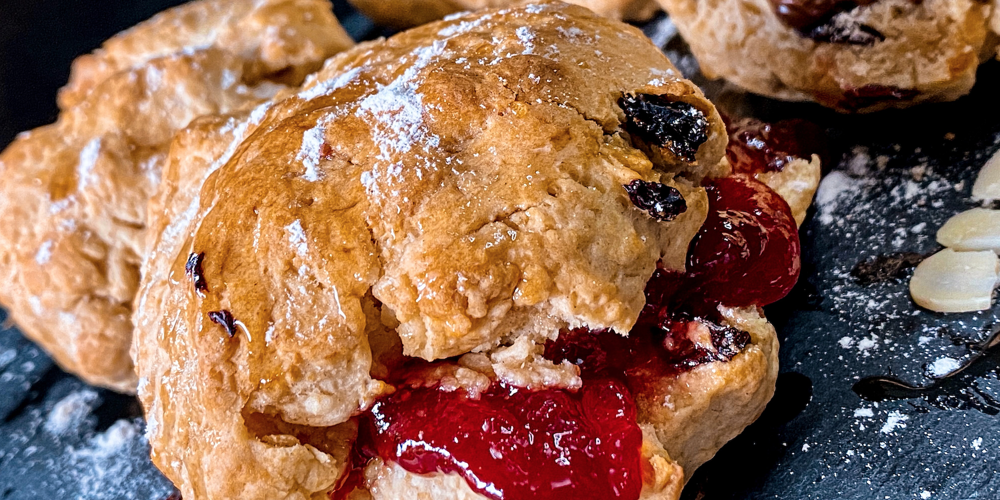

These classic English cakes are served best warm with jam and clotted
cream

Fruit Scones
These classic English cakes are served best warm with jam and clotted
cream
Makes: 10
Cooking Time: 10 minutes
Oven Temperature: 200°C
Ingredients:
75g chilled butter, cut into cubes, plus extra for greasing
350g self-raising flour, plus extra for dusting
1.5 tsp baking powder
30g caster sugar
75g sultanas
150ml milk
2 large eggs, beaten
Method:
Preheat oven to 200°C and lightly grease a large baking sheet.
Put the flour and baking powder into a large, chilled bowl. Add
the butter and rub with fingers into breadcrumbs, keeping all
ingredients as cold as possible.
Mix in the sugar and sultanas.
Pour 100ml of milk and all but 2 tablespoons of the beaten egg
mixture into the flour.
Mix together with a round-bladed knife into a soft dough, adding
more milk if needed.
Turn the dougn out onto a lightly flored surface and knead a few
times until gathered together. Gently roll until 2cm deep.
Cut rounds using a 6cm cutter and pay them spaced apart on the
baking sheet. Gather the trimmings and roll out again.
Brush the tops with the remaining egg and bake for about 10
minutes until risen and golden. Remove and cool on a wire rack.
This website is coded by Natasha Websdale and is
open-sourced.